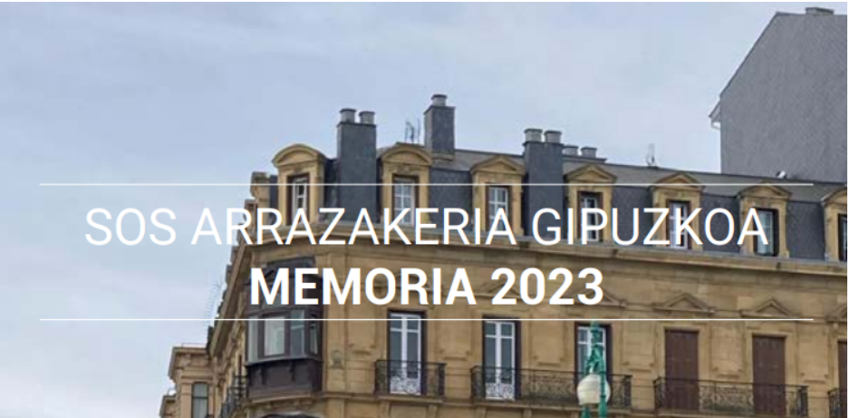
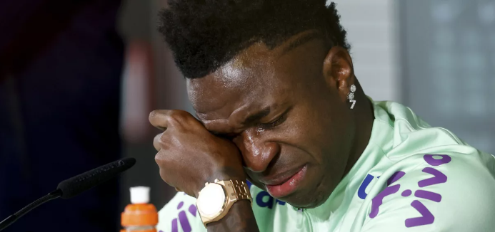

abril 24, 2024
SOS Racismo Gipuzkoa: Ya está disponible la «memoria 2023
ES EUS Imagina que los límites son sólo líneas de un mapa y que se...

marzo 23, 2024
Vinicius Rompe a llorar en rueda de prensa
El internacional brasileño del Real Madrid no pudo contener las lágrimas mientras hablaba sobre la actitud racista de algunos aficionados en el mundo del fútbol. El jugador ha sido víctima de insultos por su color de piel, en varias ocasiones, durante los partidos y fuera de los estadios,